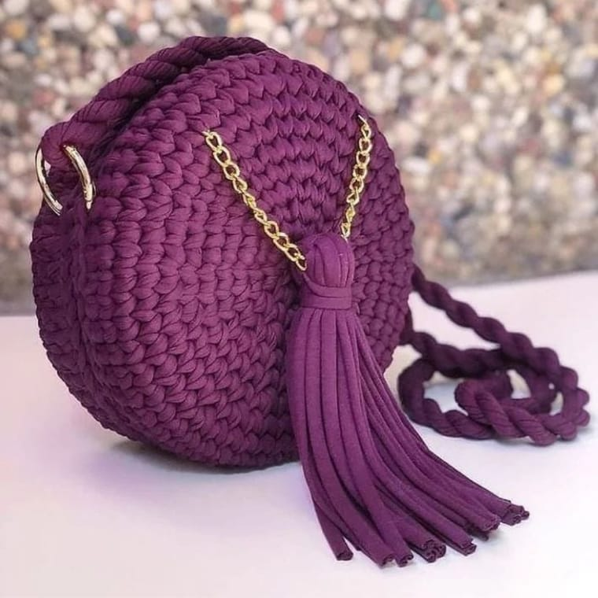

Bolsas feitas à mão
Como combinar looks com bolsas de crochê
Este é um blog específico para falarmos sobre os significados das cores de nossa marca, confeccionamos bolsas de fio de malha, feitas à mão.
Neste blog, vamos trabalhar com as cores roxo, preto, branco, amarelo e rosê.
Então, vamos lá!!!
Roxo
O roxo significa...
